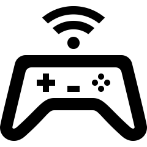

Mam na imię Natan, aspiruje na rolę fronted developera :)
- Pracownik infolinii Tauron (15.10.2020r.-20.01.2021r.)
- Pracownik produkcji Brembo (02.02.2021r.-09.05.2021r.)
- Praca dorywcza pomocnik elektryka (14.05.2021r.-20.09.2021r.)
- Praca dorywcza Monter mebli (25.09.2021r.-13.05.2022r.)
Doświadczenie zawodowe:
- 2017-2020 VII Liceum Ogólnokształcące im.Krzysztofa Kamila Baczyńskiego. Kierunek: Ratownik medyczny
- 2022-Teraz Studia I stopnia inżynierskie kierunek informatyka.
Wykształcenie:
- Niemiecki (A2)
- Angielski (B1)
Języki:
- Nauka języków obcych (obecnie niemiecki)
- Muzyka
-  Granie w gry komputerowe oraz mobilne